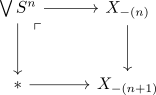
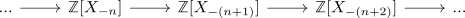

cellular homology via spectral sequences
Proposition
Let $X$ be a cw structure of an anima.
Proof
After reindexing we get that the cw structure is given by

so let

be the filtered spectrum. Then we use the spectral sequence of a filtered spectrum
Then using some connectivity argument of $X_n$ we get that our filtration of $H_n(X)$ is given by
\begin{align*}
...0,H_n(X_n)/\bigoplus \mathbb{Z}, H_n(X),...
\end{align*}
By